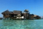

北京:天安门

地址: 北京市 东城区西长安街
开放时间: 周一 - 周日 ( 全天开放 )
电话：0888 5101974
网址：www.tiananmen.com
到达方式: 地铁1号线到天安门东（西）站下
门票: 免费
类型：主题公园
北京是我国的首都，全国的政治、文化中心和国际交往的枢纽，也是一座著名的“历史文化名城”。北京，历史上曾经是几个朝代的都城，从高空俯瞰，规模宏大的帝王宫殿、园林、庙坛、陵墓及其他古代建筑井然有序、错落有致，俨然可见昔日皇城的威严。北京旅游资源无与伦比，有世界上最大的皇宫紫禁城故...更多
天安门游记
北京儿时的记忆换来30而立的旅程
北京，在我的记忆里它是模糊的，儿时9岁那年父母带着我和妹妹去游玩过，住在北京的姑奶奶家的四合院里，零星的点点记忆即将全部被我淡忘，听说我家胖子是12岁那年去过北京，他对北京的影响该比我要深刻许多。在我的提议下我们开始分工准备北京之行的所有，行程安排定在10月4号——10月8号，我开始在马蜂窝上搜索所有关于北京该去的景点的名称、路线、门票、吃的、有意思的、该买的等等...

北京旅游攻略 【北京攻略】北京攻略之衣食住行_欣欣_新浪博客
狼小时候跟旅行社来北京玩，一天之内玩了故宫、动物园和颐和园。多少年之后，他和我分别去了这几个地方以后，喟叹道：“这能放到一天玩吗？”像北京这样交通便利发达、景点星罗密布的城市，如果不报团，也许能玩得更惬意，更轻松。我希望我感知到的这些，也是您需要的那些。